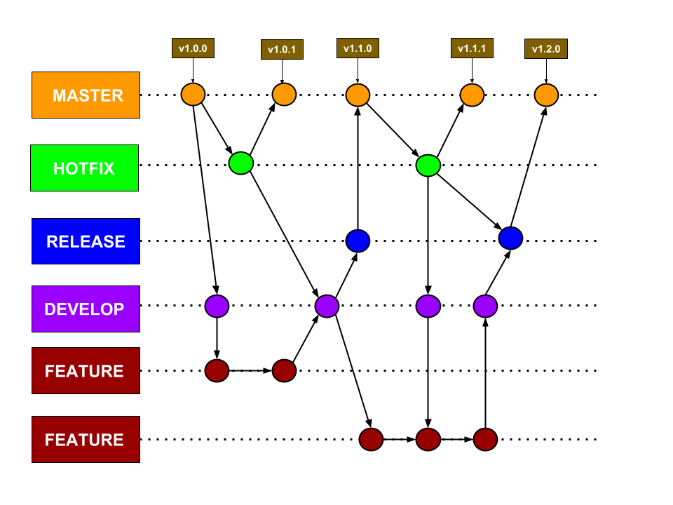

Política de Branchs
1. Introdução
Esse documento tem como objetivo padronizar a nomenclatura e uso de branchs no repositório. Como base foi utilizado o modelo de branchs do gitflow como mostrado na imagem a seguir.

2. Branchs
Esse repositório trabalhará com cinco tipos de branchs: master, bugfix, release, develop e feature. Abaixo segue uma descrição de cada uma:
-
Master: É a branch que contém código em nível de produção, ou seja, o código mais maduro existente na aplicação. Todo o código novo produzido eventualmente é juntado com a branch master, em algum momento do desenvolvimento;
-
Hotfix: São branches no qual são realizadas correções de bugs críticos encontrados em ambiente de produção, e que por isso são criadas a partir da branch master, e são juntadas diretamente com a branch master e com a branch develop e com a branch release, se estiver alguma ativa (pois os próximos deploys também devem receber correções de bugs críticos). Por convenção, essas branches tem o nome começando com hotfix/ e terminando com o próximo sub-número de versão (exemplo: hotfix/2.31.1);
-
Release: São branches com um nível de confiança maior do que a branch develop, e que se encontram em nível de preparação para ser juntada com a branch master e com a branch develop (para caso tenha ocorrido alguma correção de bug na branch release/* em questão). Note que, nessas branches, bugs encontrados durante os testes das features que vão para produção podem ser corrigidos mais tranquilamente, antes de irem efetivamente para produção. Essa é a branch usada para fazer a homologação de novas features. Por convenção, essas branches tem o nome começando com release/ e terminando com o número da próxima versão do software (seguindo o exemplo do hotfix, dado acima, seria algo como release/2.32.0);
-
Develop: É a branch que contém código em nível preparatório para o próximo deploy. Ou seja, quando features são terminadas, elas são juntadas com a branch develop, testadas (em conjunto, no caso de mais de uma feature), e somente depois as atualizações da branch develop passam pela fase de homologação e, se aprovadas, são juntadas com a branch master para produção. Sempre que uma correção for feita (hotfix) essa branch deverá ser atualizada;
-
Feature: São branches no qual são desenvolvidos recursos novos para o projeto em questão. Essas branches tem por convenção nome começando com feature/#issue_description (exemplo: feature/#59_new_layout) e são criadas a partir da branch develop (pois um recurso pode depender diretamente de outro recurso em algumas situações), e, ao final, são juntadas com a branch develop.